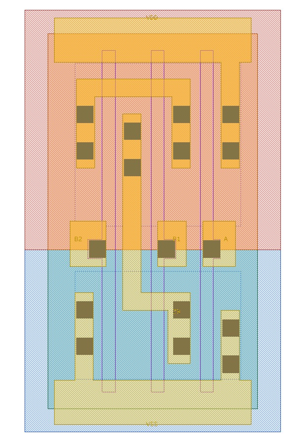
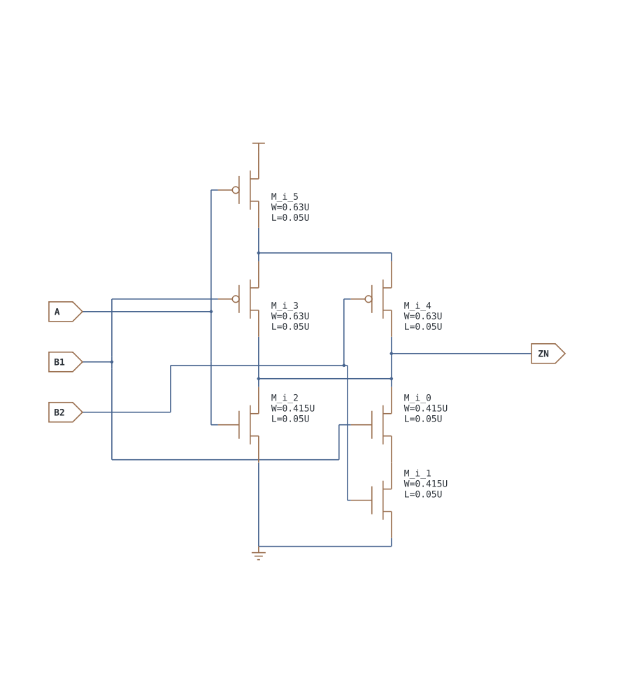
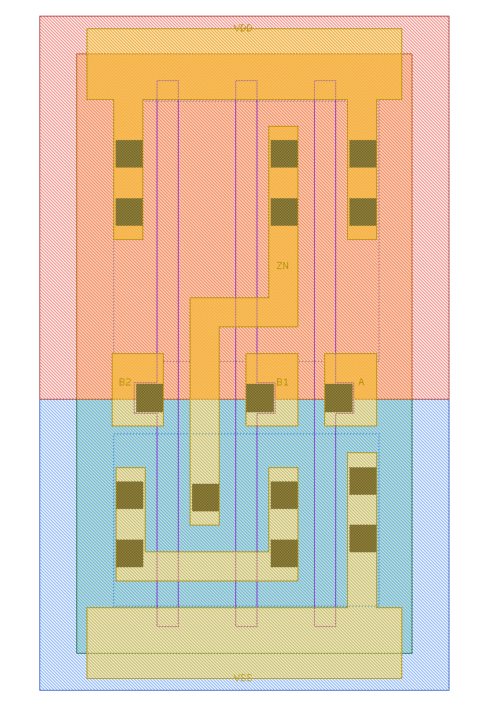
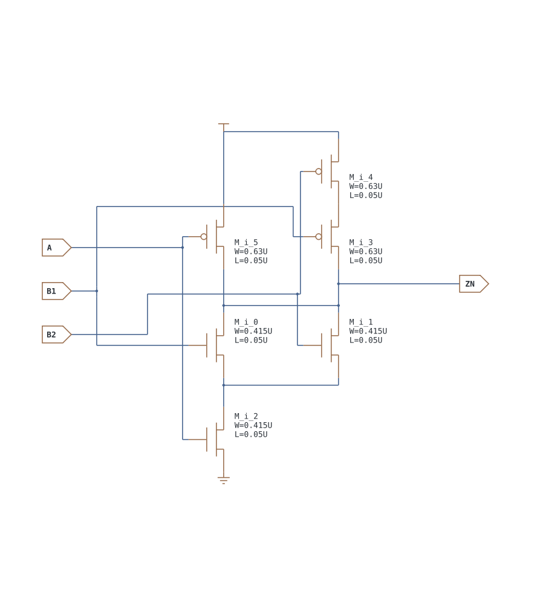

第 14 章 AOI/OAI 复合门与逻辑映射
用一张完整真值表、一条下拉路径和它的对偶看懂复合门
14.1 AOI/OAI：先算中间项，再看最后一级反相
| 这一类解决什么 | 本库成员举例 | 常见应用 | 使用价值与代价 |
|---|---|---|---|
| 直接实现“与项之或再取反” | AOI21/211/22/221/222 | 授权汇总、译码、比较条件、进位相关逻辑 | 可减少逻辑级数和内部节点；不同输入到输出的延迟可能明显不同 |
| 直接实现“或项之与再取反” | OAI21/211/22/221/222、OAI33 | 使能后的异常检测、分组条件、状态控制 | 串并联网络紧凑；较深晶体管堆叠和输入排列会影响速度 |
AOI 是“若干 AND 项做 OR 后取反”；OAI 是“若干 OR 项做 AND 后取反”。用中间项写真值表既完整又避免机械展开 64 行。
| 单元族 | 本库函数 | 中间项定义 |
|---|---|---|
| AOI21 | ZN=!(A + B1·B2) | T1=A, T2=B1·B2 |
| AOI211 | ZN=!(A + B + C1·C2) | T1=A, T2=B, T3=C1·C2 |
| AOI22 | ZN=!(A1·A2 + B1·B2) | T1=A1·A2, T2=B1·B2 |
| AOI221 | ZN=!(A + B1·B2 + C1·C2) | T1=A, T2=B1·B2, T3=C1·C2 |
| AOI222 | ZN=!(A1·A2 + B1·B2 + C1·C2) | T1=A1·A2, T2=B1·B2, T3=C1·C2 |
| AOI 中间项条件 | ZN |
|---|---|
| 所有 T 都为 0 | 1 |
| 至少一个 T 为 1 | 0 |
| 单元族 | 本库函数 | 中间项定义 |
|---|---|---|
| OAI21 | ZN=!(A·(B1+B2)) | T1=A, T2=B1+B2 |
| OAI211 | ZN=!(A·B·(C1+C2)) | T1=A, T2=B, T3=C1+C2 |
| OAI22 | ZN=!((A1+A2)·(B1+B2)) | T1=A1+A2, T2=B1+B2 |
| OAI221 | ZN=!(A·(B1+B2)·(C1+C2)) | T1=A, T2=B1+B2, T3=C1+C2 |
| OAI222 | ZN=!((A1+A2)·(B1+B2)·(C1+C2)) | T1=A1+A2, T2=B1+B2, T3=C1+C2 |
| OAI33 | ZN=!((A1+A2+A3)·(B1+B2+B3)) | T1=A1+A2+A3, T2=B1+B2+B3 |
| OAI 中间项条件 | ZN |
|---|---|
| 所有 T 都为 1 | 0 |
| 至少一个 T 为 0 | 1 |
例如 AOI21 先算 T2=B1·B2，再查二输入 NOR 表；四种 A/T2 组合就是对原三输入 8 行的无损压缩。AOI/OAI 的优势是把多级逻辑折进一个互补 CMOS 网络，常比 NAND/NOR/INV 拼接减少级数与内部电容，但输入弧和晶体管堆叠更不对称。
名称、分组与具体信号例子
名称中的数字描述各逻辑分组包含多少个输入，但不要只凭 “21” 猜引脚顺序。例如本库 AOI21 的单输入项叫 A，二输入 AND 项叫 B1/B2，方程是 !(A+B1·B2)；其他库可能采用不同引脚命名。搬到新工艺库时应读取 Liberty 的 function 或 CDL 方程。
| 设计意图 | 代入本库单元 | 结果怎样理解 |
|---|---|---|
| 禁止或握手发生时，输出低有效阻断 | AOI21：A=kill, B1=valid, B2=ready | block_n=!(kill+valid·ready)；kill=1 或握手成立都会使阻断信号有效（为 0） |
| 两路“请求且授权”任一路成立 | AOI22：A1=req0, A2=gnt0, B1=req1, B2=gnt1 | none_granted=!(req0·gnt0+req1·gnt1) |
| 总使能打开且任一错误存在 | OAI21：A=enable, B1=err0, B2=err1 | error_n=!(enable·(err0+err1))；条件成立时错误指示低有效 |
| 两个分组都至少有一个条件成立 | OAI22：A 组和 B 组各接两条件 | ZN=!((a0+a1)·(b0+b1))；任一组全 0 都使 ZN=1 |
| 三个候选通路的有效项汇总 | AOI222：每个二输入组接 valid_i/data_i | 任一 valid_i·data_i=1 时 ZN=0，适合表达分组乘积项而非任意六输入逻辑 |
手算例子：AOI21 取 kill=0, valid=1, ready=1，先得 valid·ready=1，再得 block_n=!(0+1)=0。若 ready 改为 0，则输出变为 1。这个“先算组内、再算组间、最后取反”的步骤同样适用于 AOI222/OAI33。
{kind=link}

{kind=link}

{kind=link}

{kind=link}

14.2 不跳步骤：AOI21 与 OAI21 的八行真值表
这里严格采用本地 CDL 命名：AOI21 为 ZN=!(A+B1·B2)，OAI21 为 ZN=!(A·(B1+B2))。两个门都是三输入，但括号位置不同，不能互换。
| A | B1 | B2 | B1·B2 | B1+B2 | AOI21 ZN | OAI21 ZN |
|---|---|---|---|---|---|---|
| 0 | 0 | 0 | 0 | 0 | 1 | 1 |
| 0 | 0 | 1 | 0 | 1 | 1 | 1 |
| 0 | 1 | 0 | 0 | 1 | 1 | 1 |
| 0 | 1 | 1 | 1 | 1 | 0 | 1 |
| 1 | 0 | 0 | 0 | 0 | 0 | 1 |
| 1 | 0 | 1 | 0 | 1 | 0 | 0 |
| 1 | 1 | 0 | 0 | 1 | 0 | 0 |
| 1 | 1 | 1 | 1 | 1 | 0 | 0 |
先独立算前五列，再检查输出，尤其关注 011 与 100：这两行把两个门区别开了。验证等价性时，只测 000 和 111 无法发现替换错误。
14.3 从“输出何时为 0”画出下拉网络
AOI21 的输出为 0 条件是 A 或 (B1 且 B2)。因此 NMOS 有两条并联支路：一条只有 A，另一条串联 B1/B2。PUN 要在 A=0 且 B1/B2 至少一个为 0 时连通，所以 PMOS A 与 PMOS B1/B2 的并联组合串联。逐一用 011、100、000 追路径，就能核对原理图。
OAI21 则把 NMOS A 与 B1/B2 的并联组合串联，PMOS A 与 B1/B2 的串联支路并联。注意 NMOS 网络的“AND/OR”表示导通条件，最终输出还取反。版图可能交换器件左右位置以增加共享，但不能改变节点关系。
先在真实 AOI21_X1 网表中找到那两条支路
打开本地 CDL，定位 AOI21_X1。暂时不看 W/L，只读 D/G/S/B 四端。下面的路径写法只表达源漏连接，不改变原网表端子顺序。
| 实际器件 | 源漏连接 / 栅 | 怎样拼成网络 |
|---|---|---|
| NMOS M_i_0、M_i_1 | ZN—net_0 / B1；net_0—VSS / B2 | 共用内部 net_0，形成 B1、B2 串联下拉支路 |
| NMOS M_i_2 | VSS—ZN / A | 它单独跨接 ZN/VSS，与上一支路并联 |
| PMOS M_i_3、M_i_4 | 都连接 net_1 与 ZN，栅分别 B1、B2 | 同一对源漏网络形成并联组 |
| PMOS M_i_5 | VDD—net_1 / A | 把电源串接到上述 PMOS 并联组 |
以 A/B1/B2=010 为例：A 的 NMOS 关，B1 的 NMOS 开但 B2 关，因此两条下拉支路都断；A 的 PMOS 开、B2 的 PMOS 开，路径 VDD → M_i_5 → net_1 → M_i_4 → ZN 导通，输出为 1。把 B2 改成 1，串联 NMOS 支路完整导通，两个并联 PMOS 都关，输出变成 0。这才是从方程走到晶体管图的完整中间步骤。
回到版图时分别追 net_0、net_1：前者是两只 N 管之间的串联中间网，后者连接 P 管 A 与并联组。是否真的采用连续扩散共享，仍要看 Active 与接触孔/金属，不能由上表直接宣告共享。
14.4 同一逻辑族怎样扩展
| 例子 | 先计算的中间项 | 系统用途举例 | 不应省略的检查 |
|---|---|---|---|
| AOI22 | T0=A1·A2，T1=B1·B2，ZN=!(T0+T1) | 两路请求各自得到授权后汇总“都没发生” | 组内可逻辑互换，跨组不能随便换；实际输入弧仍要查表 |
| AOI211 | 按本库方程识别一个二输入积项与两个单输入项 | 一条组合触发条件，加上两个独立强制条件 | 先核对 pin grouping，再写代入关系 |
| OAI22 | T0=A1+A2，T1=B1+B2，ZN=!(T0·T1) | 两个条件组都获得至少一个许可时输出低有效有效量 | 任一组全 0 就阻断下拉路径 |
| AOI222 / OAI33 | 更多分组，而不是“任意六输入函数” | 多项译码、分组许可或请求条件 | 扇入、堆叠、布线和每条弧的负载能力 |
14.5 为什么不同引脚不能用同一个延迟代替
AOI21 的 A 可以单独建立下拉通路，B1/B2 则依赖另一串联管先导通。测 B1→ZN 必须固定 A=0、B2=1；若 A=1，输出已经被拉低，B1 不再改变输出。测 A→ZN 可取 B1=B2=0，但其他合法敏化状态的内部节点电荷可能不同。表征器要覆盖有意义的状态并按方法学归并，不是机械地把同一张 INV 表复制给所有输入。
- 把 AOI21 的 A/B1 互换，举一个输入证明功能可能改变。
- 测 OAI21 的 B1 弧时，A/B2 应怎样设置？
- 为什么减少一级逻辑不保证系统路径必然更快？
答案
① 原输入 A=1、B1=0、B2=0，原输出 0；互换后 A=0、B1=1、B2=0，输出 1。② A=1、B2=0，使 B1 决定 B1+B2。③ 复合门串联、电容、输入到达时间和负载都可能改变，须比较实际映射与 Liberty/PEX 时序。